Segovia
Cultura
Segovia, cuya ciudad vieja y acueducto romano están declarados Patrimonio Mundial por la UNESCO, se encuentra situada en una elevación del terreno, entre los cauces de los ríos Eresma y Clamores. Además del famoso Acueducto, multitud de iglesias románicas, Catedral y Alcázar componen un majestuoso paisaje que domina estas tierras castellanas. Su moderno Parador de Turismo es uno de los mejores lugares donde el viajero puede degustar el plato más típico de la ciudad: el cochinillo al horno. Asimismo, Segovia es un excelente punto de partida para recorrer la provincia y acercarse al palacio de La Granja o al Parque Natural de las Hoces del Río Duratón, entre otras opciones.
La puerta de entrada al casco histórico de Segovia es el Acueducto romano, en la plaza del Azoguejo. Esta joya de ingeniería, construida bajo la Roma imperial (s. I), transportaba agua a la ciudad alta desde 15 kilómetros de distancia. Sus 163 arcos y sus 29 metros de altura, en su punto más alto, se sustentan gracias a sillares de piedra de la Sierra de Guadarrama sin argamasa, plomo o mortero.
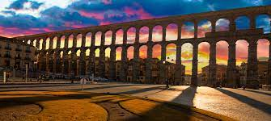Volver al inicio
Geografía
La provincia está surcada por diferentes cursos de agua que nacen en las alturas de la sierra de Guadarrama y que, con la excepción de algunos pocos arroyos que discurren en dirección suroeste pertenecientes a la cuenca hidrográfica del Tajo, discurren en dirección sureste-noreste por el llano de la Meseta Norte, todos ellos pertenecientes a la cuenca hidrográfica de Duero. Entre ellos se encuentran el río Eresma, que pasa por la capital provincial, y el Duratón con sus conocidas «hoces», además del Cega, el Riaza y el Voltoya.

El clima es mediterráneo continentalizado, con inviernos prolongados, secos y fríos, y veranos calurosos pero cortos.
Volver al inicio
Historia
Se tiene constancia de asentamientos humanos desde la prehistoria, concretamente hay evidencia de la presencia de neandertales. El cerro donde hoy se alza el Alcázar, fue el lugar elegido por los celtas para construir un castro.
Más adelante fue ocupada por los romanos, quienes dejaron numerosas huellas que aún permanecen en nuestros días. Como el Acueducto, construido hace más de 2.000 años para conducir el agua desde la sierra hasta la ciudad.
Hoy se considera la obra de ingeniería civil romana mejor conservada de España.
Tras ellos llegaron los visigodos, las muestras de su paso por la ciudad se conservan en el Museo de Segovia.
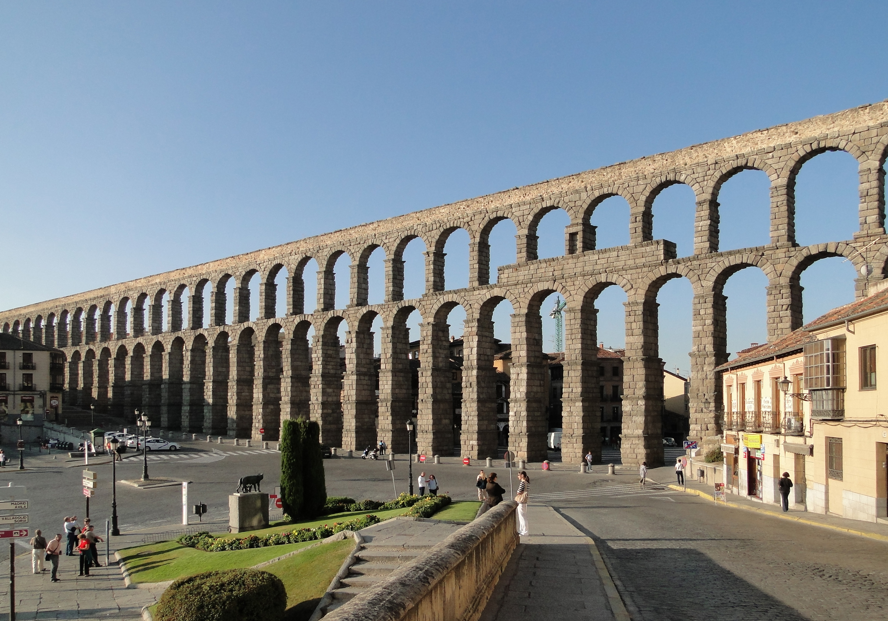La ciudad fue abandonada durante la invasión islámica de la península. No fue hasta finales del siglo XI cuando es repoblada por los cristianos, gracias a eso se conserva un gran patrimonio románico.
Los nuevos pobladores llegaron principalmente desde Francia. Alfonso VI encargó a su yerno Raimundo de Borgoña la tarea de repoblar la zona para mejorar las defensas al norte de la capital, que por aquel entonces era Toledo.
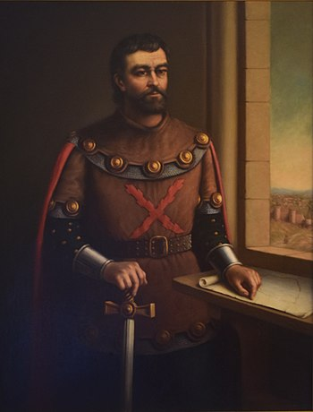La Edad Media fue una época de gran esplendor, gracias sobre todo al auge de la industria pañera. Se colonizaron grandes territorios y se construyen numerosos conventos y monasterios de estilo gótico.
El 13 de diciembre de 1474, en la Iglesia de San Miguel de Segovia se proclama reina de Castilla a Isabel la Católica.
A principios del siglo XVI tuvo lugar la Guerra de las Comunidades, en la que los segovianos jugaron un papel destacado.
Las tropas al mando del noble castellano Juan Bravo plantaron cara a los invasores flamencos, aunque finalmente Juan Bravo fue asesinado y la revuelta disuelta.
En el siglo XVIII, coincidiendo con el comienzo del reinado de los borbones en España, se construyó el Palacio de la Granja de San Ildefonso, el Palacio Real de Riofrío y el Real Colegio de Artillería, la primera academia militar del país.

Todo formaba parte de un plan para reflotar la economía de la ciudad, aunque no surtió el efecto deseado.
Al igual que en otras ciudades castellanas, la Edad Moderna trajo el deterioro de la economía y la pérdida de población.
La ciudad fue saqueada por el ejército francés durante la Guerra de Independencia. Poco tiempo más tarde, durante la Primera Guerra Carlista, fue atacada por las tropas del infante Carlos de Borbón, aunque sin éxito.
Volver al inicio
Localidades
La unidad administrativa básica en la que se divide la provincia son los municipios. Existen 234 en la actualidad. El municipio con más habitantes es la capital provincial. El resto de municipios no alcanzan la cifra de 10 000 ciudadanos empadronados. Es destacable un elevado número de ellos con poblaciones por debajo de los 500 habitantes. La extensión promedio del municipio en la provincia es de 33,11 km². Entre las localidades de la parte noroeste de la provincia destacan en cuanto a población Cuéllar —el segundo municipio en población de la provincia—, Coca, Navas de Oro o Nava de la Asunción. En el sur de la provincia, en la vertiente noroccidental de la sierra de Guadarrama los municipios con más habitantes son, junto a la propia ciudad de Segovia (que cuenta con municipios limítrofes de relativa importancia como Palazuelos de Eresma, La Lastrilla, Hontanares de Eresma o San Cristóbal de Segovia), los de El Espinar, Real Sitio de San Ildefonso (La Granja) o Villacastín.
El centro de la provincia destacan los municipios de Cantalejo, Carbonero el Mayor o Turégano. En la poco poblada parte noreste de la provincia los municipios de mayor población son Sepúlveda, Riaza y Ayllón.
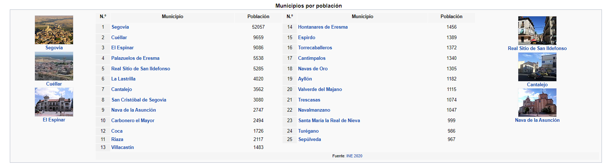Volver al inicio
Localización
La provincia, que tiene una superficie de 6920,65 km², limita al norte con las provincias de Valladolid y Burgos, al este con Soria y Guadalajara, al sur con la Comunidad de Madrid, y al oeste con Ávila.
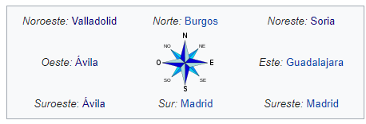 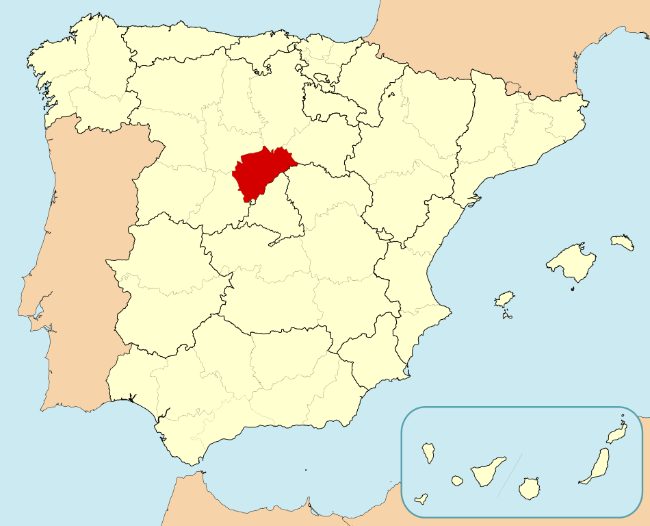Volver al inicio
Naturaleza
La provincia de Segovia ofrece a los amantes de la naturaleza unos grandes espacios naturales y áreas recreativas. A las extensas llanuras cerealísticas, típicas de los campos castellanos, se suman los grandes pinares, los paisajes serranos formados por pastos, encinas y pinos o las frescas riberas de los ríos, perfiladas por choperas o escarpados acantilados formados por la erosión del agua y el paso de los años. Parques Naturales como las Hoces del Duratón o las Hoces del Riaza, el Parque Nacional de Guadarrama o la Sierra de Ayllón, son garantías suficientes para conseguir un buen plan natural con éxito. Además, también lugares perfectos para la realización de senderismo, rutas cortas o largas, para todos los gustos.
 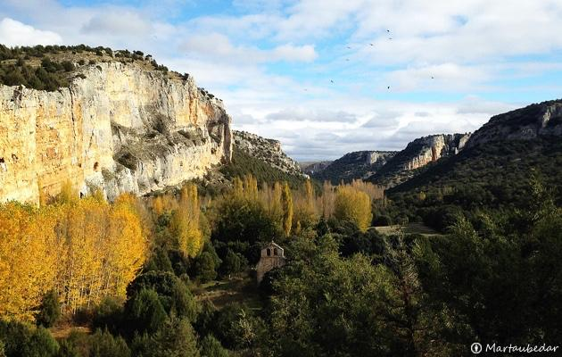
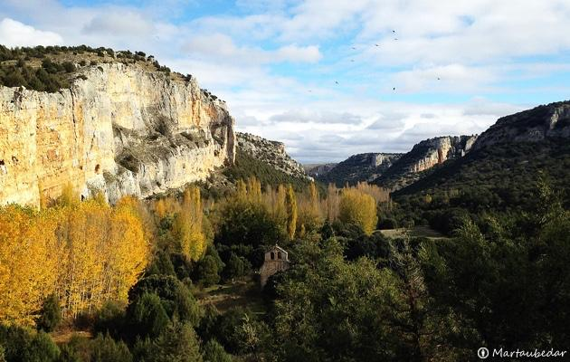
La Cueva de los Enebralejos, junto al pueblo de Prádena de la Sierra, es la más importante de las conocidas en la provincia de Segovia.
Desde su entrada, la cueva nos presenta la belleza de sus salas y galerías, adornadas con un espléndido conjunto de concreciones calcáreas: estalactitas, estalagmitas, columnas, coladas y banderas se suceden a medida que nos internamos en ella.
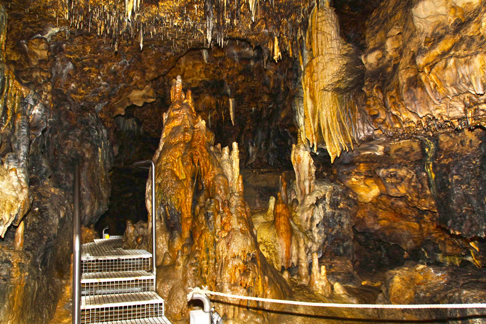Nos encontramos también con numerosas muestras del uso de la cueva como necrópolis por nuestros antepasados del calcolítico en forma de pinturas y grabados que han sido datados aproximadamente del año 2500 A.C.
Volver al inicio
Tradiciones
En Segovia se celebran dos fiestas patronales:
- Día 25 de septiembre, en honor de la Virgen de la Fuencisla.
- Día 25 de octubre, en honor de San Frutos.
La Virgen de la Fuencisla es trasladada en romería desde su santuario en la Alameda de la Fuencisla hasta la Catedral de Segovia.
Allí se queda durante nueve días, hasta que vuelve a su hogar el último día del mes de septiembre. En la romería es acompañada por los cadetes de la Academia de Infantería, dado que la virgen ostenta el cargo de Capitán General de Artillería.
La otra gran fiesta patronal es en honor de San Frutos, los eventos se concentran en los alrededores de la Plaza Mayor y la Catedral.
Hay muchas actividades musicales, pero si hay que destacar sólo una, es el gran coro popular que forman los segovianos a las puertas de la catedral para entonar el Villancico de San Frutos.
El otro momento álgido de las fiestas es cuando se produce el milagro del santo pasando una hoja del Libro de la Vida.
Volver al inicio
Otros
Gastronomía
La provincia de Segovia, destaca principalmente por sus asados, tanto cordero como cochinillo de Segovia. Otros platos típicos son el chorizo de Cantimpalos, los judiones de La Granja, las sopas de ajo, y como postre el afamado ponche segoviano. El producto hortícola segoviano más conocido es el guisante.
En cuanto a bebidas, en la provincia de Segovia, se encuentran municipios pertenecientes a dos Denominaciones de Origen: Denominación de Origen de Rueda, y Denominación de Origen Ribera del Duero; además, cuenta con el vino de calidad de Valtiendas.
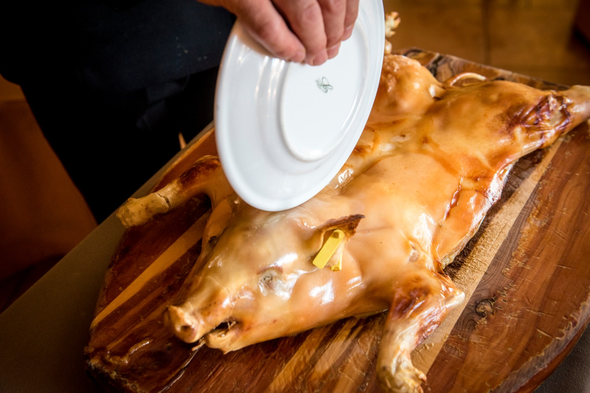Demografía
En 2020, la población estimada (INE) de la provincia de Segovia ascendía a 153 478 personas. Entre los años 2000 y 2009, la provincia recuperó población, posiblemente debido al impulso económico que supone estar cerca de la Comunidad de Madrid, y en los años 2010 a 2017, se ha pasado a una fase de estancamiento a causa de la crisis económica y el envejecimiento de la población. Segovia sigue siendo una provincia muy despoblada, con una densidad demográfica muy baja, de poco más de 22 hab./km². En el conjunto de las provincias españolas, solo Soria (88 903 habitantes) y Teruel (135 562 habitantes) tienen menos población absoluta (INE, 2018). En el contexto de Castilla y León, en los últimos quince años se ha recortado notablemente el diferencial de población con respecto a las provincias de Ávila (160 700 habitantes) y Palencia (163 390 habitantes).
Los principales núcleos de población de la provincia de Segovia son: la capital provincial Segovia, Cuéllar, El Espinar, La Granja de San Ildefonso, Cantalejo, San Rafael, Nava de la Asunción, Carbonero el Mayor, Riaza, Coca, Villacastín, Navas de Oro, Ayllón, Cantimpalos y Turégano. Más de la mitad de los municipios tienen menos de 200 habitantes. El crecimiento demográfico más dinámico de la provincia lo ha experimentado la veintena de municipios que forman el llamado "alfoz" de Segovia, es decir aquellos que se sitúan a una distancia relativamente corta de la capital provincial estando dentro de su zona de influencia, y que, por ello, reciben preferencialmente la migración de la población que busca viviendas menos costosas sin alejarse excesivamente del núcleo urbano y de las fuentes de trabajo.
De acuerdo a los datos del INE, el alfoz de Segovia ha crecido en forma sostenida en las últimas dos décadas, aumentado su población más del 100 %, entre los años 2000 y 2010 hasta alcanzar los 20 000 habitantes. La capital provincial creció solamente un 0,7 % en dicho período, e inclusive redujo su población en 466 individuos (0,8 %) entre los años 2005 y 2006 (INE). En contraste, los incrementos demográficos más marcados en el mismo período, se han producido en varios municipios del alfoz, destacando un primer cinturón distante hasta 10 km con: Espirdo, La Lastrilla, San Cristóbal de Segovia, Palazuelos de Eresma, Trescasas y Torrecaballeros, así como un segundo cinturón de municipios, distante entre 10 y 20 km con: Hontanares de Eresma, Valverde del Majano, Garcillán, Abades, Real Sitio de San Ildefonso, Bernuy de Porreros, Encinillas y Roda de Eresma entre otros.
El municipio de El Espinar es un caso especial en la provincia. Por su condición de municipio segoviano más próximo y mejor comunicado con Madrid, está experimentando notables crecimientos demográficos que se vienen dando durante el siglo xxi (aproximadamente un 5% anual). Incrementos de población motivados por dicha proximidad a Madrid se detectan también en otros municipios del suroeste provincial, como Ituero y Lama, Otero de Herreros, Navas de San Antonio, Zarzuela del Monte o Marugán.
El municipio de Cuéllar es otro caso especial en la provincia, ya que se sitúa en la zona denominada ``El Carracillo´´, lugar donde hay extensiones grandes de superficie cultivada, gracias al acuífero que toma el mismo nombre. Es una zona que atrae población, y de ello, es beneficiaria la propia ciudad de Cuéllar. Otra razón es que se encuentra a medio camino entre Segovia y Valladolid y la única con una población de 10 000, por lo que es un centro de referencia comarcal. Actualmente cuenta con alrededor de 10 000 habitantes.
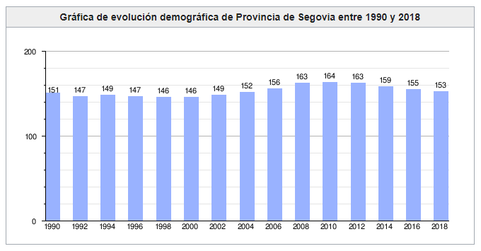Volver al inicio